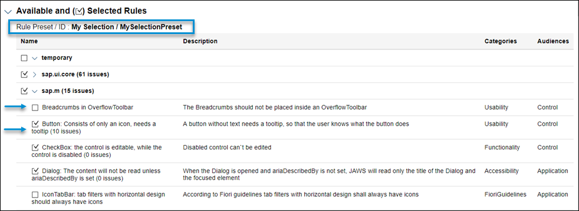
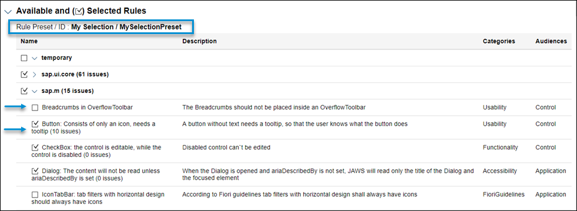

Analysis Report
Analysis Report
The report contains information from the loaded components, a detailed list of the technical information and a list with all issues. The following image shows the report with collapsed sections.

The report contains the following elements:
-
A time stamp for when it has been generated.
-
Last analysis duration showing the time taken by the last analysis.
-
An execution scope with short description.
-
Available and selected rules.
Here you can see all available rules per library. All rules that have been selected for the analysis are marked with a checkmark (
 ). This section also
gives you information about the used rule preset and its ID.
). This section also
gives you information about the used rule preset and its ID. -
Technical information section. Here you can see the version of the Support Assistant and the location from which it has been loaded as well as more information about the app.

-
Application information section.

-
Issues section.
The issues are grouped by library and rule. In the following example, there is one library (
sap.m) with 5 rules. They have generated 18 issues in total - 16 with medium severity and 2 with low severity.
You can also download the report by selecting Download (below the View button). The report is going to be downloaded in a ZIP format containing the following files:
-
The report HTML (report.html)
-
A JSON file with all loaded components (appInfos.json)
-
A JSON file with all issues (issues.json)
-
A JSON file with all technical information (technicalInfo.json)